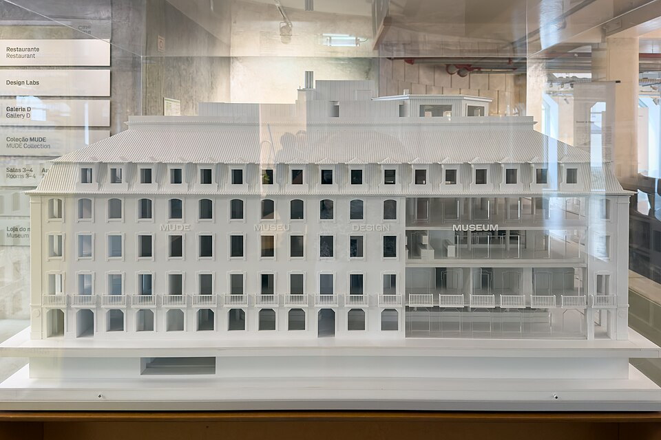
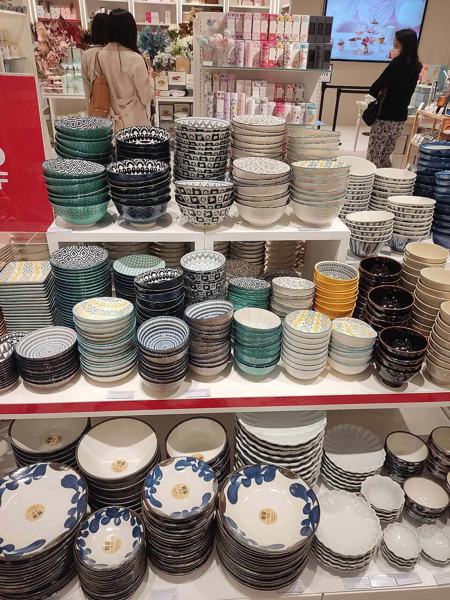
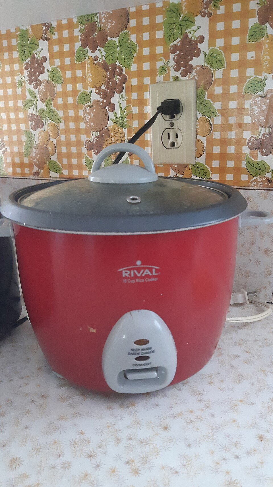
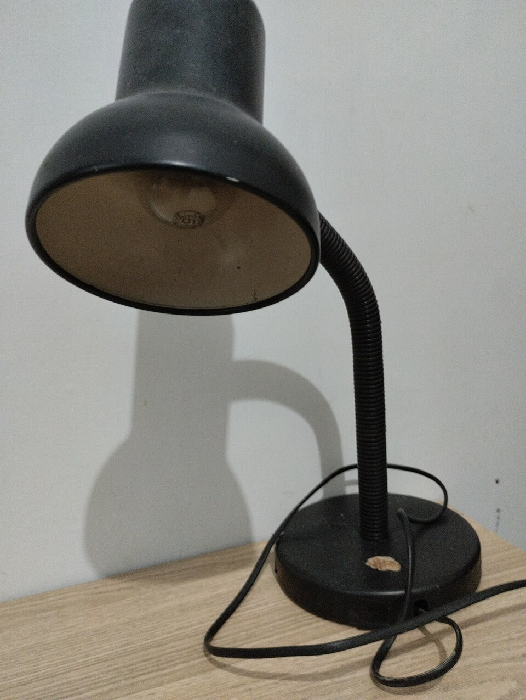
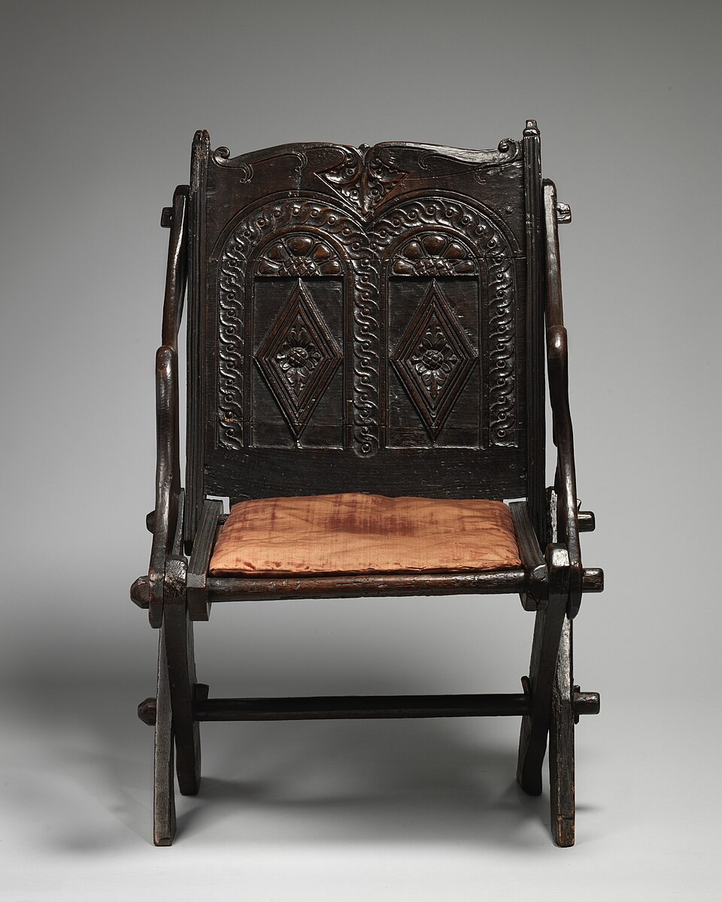
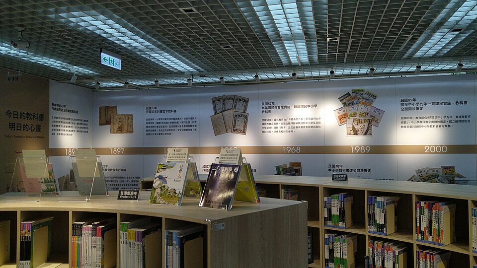
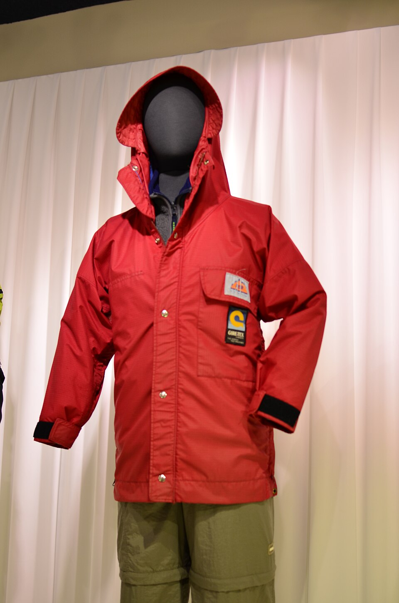

Photo by Kent Wang · CC BY 4.0
Architecture materials
Model-making offcuts
Coarse card, foam board and balsa leftovers.
Independent student-led prototype · Not an official UCL service · Sample listings and pickup points
WELCOME TO UCL MARKETPLACE
Buy, sell or give away the things you already have. A second-hand marketplace concept for UCL students and staff.
Explore listingsA few fictional finds from around the UCL community.

Photo by Kent Wang · CC BY 4.0
Architecture materials
Coarse card, foam board and balsa leftovers.

Photo by CAHOGNSUIE 202 KADPA · CC BY-SA 4.0
Free stuff
Two bowls, plates and a mug, ready for a new home.

Photo by Jugo Yokomizo · CC BY-SA 4.0
Kitchen appliances
Small working cooker, ideal for a shared kitchen.

Photo by AirbusA330772673 · CC BY-SA 4.0
Electronics
Warm light and a movable arm for late study sessions.

Image courtesy of The Met · CC0
Furniture
Folds flat for easy collection and storage.

Photo by Jonashtand · CC BY-SA 4.0
Books & textbooks
Used copy with a few highlights.

Photo by Joe Mabel · CC BY-SA 4.0
Clothes
Gently used, medium size, ready for London weather.
COMMUNITY WISHLIST
Post a request like “Looking to buy a bike”. Requests in this demo are saved locally and are not visible to others.
No requests yet. You could be the first!
SUSTAINABILITY IMPACT
A real pilot could track completed exchanges and use a move-out survey to learn what would otherwise be discarded.
POP-UP EVENTS · PROPOSED
Bloomsbury campus
Imagine a lunchtime launch pop-up. Bring a clean item to swap, pick up something useful, or try the marketplace in person.
Date and venue to be confirmed
CAMPUS PICKUP
Illustrative pickup points. For a live pilot, meet in busy, well-lit shared spaces during opening hours. View UCL campus map (PDF, 2014)
Arrange a time to meet at a familiar campus spot.
Meet in personCampus area only; agree an exact meeting point separately.
Open Bloomsbury in Google Maps ↗Arrange a time to meet at a familiar campus spot.
Meet in personCampus area only; agree an exact meeting point separately.
Open UCL East in Google Maps ↗Reception collection during agreed staffed hours.
Proposed · requires permission Search UCL accommodation in Google Maps ↗Self-service collection during approved access hours.
Proposed · requires permission Search UCL campus lockers in Google Maps ↗Google Maps searches for accommodation and lockers are suggestions only; no specific collection points are confirmed.